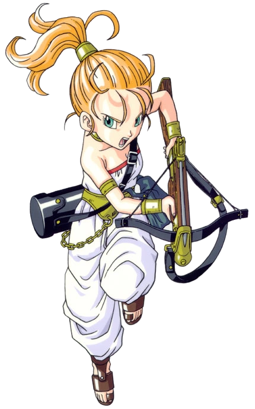
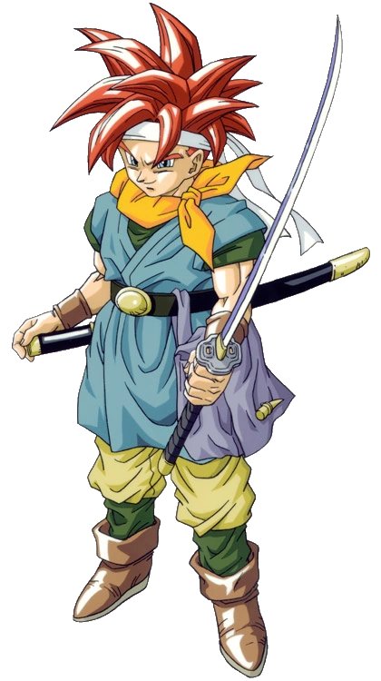

Personagens
Hérois


Chrono Trigger começa em 1000 AD com Crono, Marle e Lucca. Crono é o protagonista silencioso, caracterizado como um jovem destemido que utiliza uma katana em batalha. Marle (a princesa Nadia) vive no castelo de Guardia. Apesar da vida confortável, ela gosta de ocultar sua identidade real.
Em 1000 AD, Crono e Marle observam Lucca e seu pai em uma demonstração de seu teleportador em uma feira milenar. Quando Marle se candidata a testar o aparato, seu colar interfere com o teleportador e gera um portal do tempo que a puxa para dentro. Depois que Crono e Lucca conseguem gerar o portal novamente e chegam em 600 AD, encontram Marle, mas ela desaparece logo depois. Lucca percebe que o reinado deste período confundiu Marle com uma ancestral com o apoio de Frog, restauram a história ao salvarem a rainha sequestrada. Depois de voltar para o presente, Crono é preso sob a acusação de sequestrar a princesa e condenado à morte pelo chanceler de Guardia. Lucca e Marle ajudam Crono e fogem, usando outro portal para escapar dos guardas que os perseguem. O portal os deixa em 2300 AD, onde o trio descobre que uma avançada civilização havia sido destruída por uma gigantesca criatura conhecida como Lavos que apareceu em 1999. O trio decide encontrar uma forma de impedir a futura destruição do mundo. Após encontrar e consertar Robo, Crono e suas amigas conhecem Gaspar, um sábio que os ajuda a adquirir poderes mágicos e viajar pelo tempo através de pilares de luz.